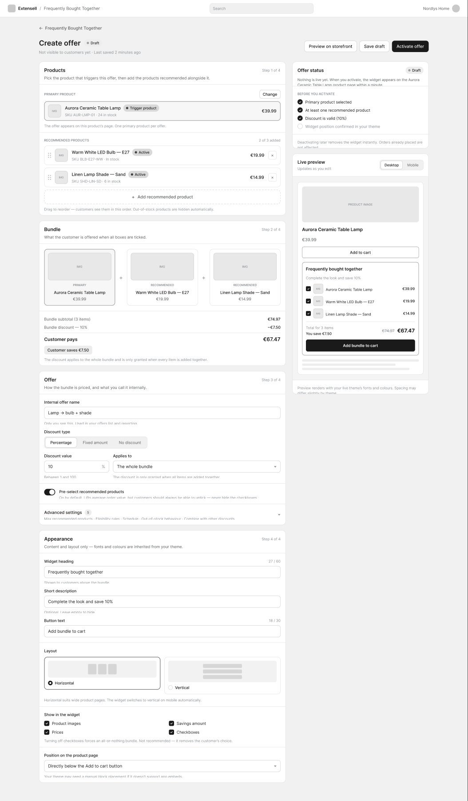

Extendsell — three ways to sell more without making the shopper feel sold to.
Extendsell is a Shopify app for merchants who want to sell more per order. I designed three storefront widgets — add-ons, frequently bought together, and related products — plus the merchant admin where each offer gets built. Every surface ships in light and dark, across desktop, tablet, and phone.

Context
A store makes much of its margin on what a shopper adds after deciding on the main product — the bulb with the lamp, the hat with the dress. Extendsell gives Shopify merchants three ways to make that happen, and my job was to make all three feel like one product.
- Add-ons — optional extras, each accepted individually.
- Frequently bought together — a discounted bundle, taken as one decision.
- Related products — discovery, for when nothing is being bundled at all.
They look similar at a glance, which was the first real problem. If a shopper can't tell what a widget is asking of them, they skip it.
One product, two users who want opposite things
The merchant wants the offer visible, frequent, and hard to miss. The shopper wants to not be sold to. Rather than resolve that once, I made it the standing review criterion — a screen ships only if it survives both readings.
That principle is why the storefront widgets never auto-add anything to a cart, why every discount shows its arithmetic, and why the admin actively warns a merchant away from the more aggressive settings it offers them.
Add-ons — one at a time, on purpose
The add-on widget had to read as a shelf, not a bundle. The heading says what it is and the subhead sets the rule out loud: each one is added on its own — pick only what you want. Every card carries its own price, its own variant selector, and its own button, which flips to a clear "Added" state rather than silently changing a count somewhere else.
- Running total in the buy-box column, with the saving stated in currency, not just a percentage.
- Button text counts what's actually selected — "Add 1 item to cart" — so nothing is ambiguous at the moment of commitment.
- A line of microcopy explains where the add-ons end up, because a shopper who is surprised at checkout doesn't come back.
- Horizontal carousel on wide screens, stacking on narrow ones, so a long list never buries the buy button.


Frequently bought together — one decision, made of parts
FBT has a credibility problem: a shopper ignores a recommendation they don't believe, and resents one they can't refuse in part. So the bundle is a single decision built from individually removable pieces. Untick the belt and the total recalculates; the rest of the offer survives.
- Each item keeps its own variant selector — bundles fail when the shopper can't pick their own size.
- The discount badge sits next to the struck-through original, so the saving is visible without arithmetic.
- Placed directly under the buy button, where intent is highest, rather than at the bottom of the page.
- Fonts and colours inherit from the merchant's theme, so it reads as part of the shop instead of a bolted-on app.


Related products — discovery without a detour
Related products isn't selling a bundle, it's answering "is there something better for me here?". It's paged rather than infinitely scrolling, so the shopper can see how much there is to look at, and a quick-view modal lets them check a size and add to cart without ever leaving the page they were about to buy from.


The merchant side — where the real design problem was
The storefront widgets are the visible half. The harder half is the admin, because a merchant configuring an offer is making pricing decisions in a form and can't see the consequences. So the whole page is built around removing that blindness.
- Four named steps — Products, Bundle, Offer, Appearance — so a long form reads as a sequence rather than a wall.
- A live preview that updates as you edit, with a desktop/mobile toggle, so nothing is ever published blind.
- An explicit pre-flight checklist in the status panel: what's done, what's still missing before the offer can go live.
- The bundle maths shown in full — subtotal, discount, what the customer pays, what the customer saves — instead of one final number.
- Helper text under every control in plain language: what it does, and what happens to existing orders if you change it.
The part I'm most attached to is the guardrails. The admin lets a merchant pre-select recommended products and hide the checkboxes — and then tells them not to: turning checkboxes off forces an all-or-nothing bundle and removes the customer's choice. Designing a setting alongside an honest argument against overusing it was the clearest expression of the two-users principle in the whole project.

Want the full walkthrough?
Happy to walk through the Figma files, the states and edge cases, and the decisions behind them.